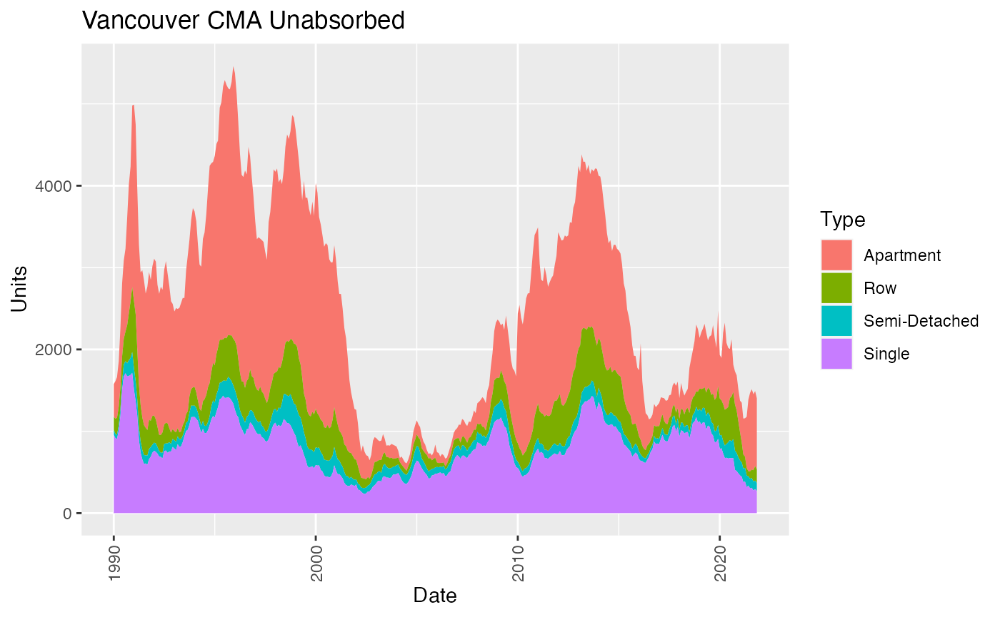

Time Lines
Jens von Bergmann
2021-12-16
timelines.RmdThis vignette demonstrates how to pull timelines from CMHC.
Completions
##
## Attaching package: 'dplyr'## The following objects are masked from 'package:stats':
##
## filter, lag## The following objects are masked from 'package:base':
##
## intersect, setdiff, setequal, union
library(tidyr)
library(ggplot2)
parse_integer <- function(x){return(as.integer(sub(",", "", x, fixed = TRUE)))}
#devtools::install_github("mountainmath/cmhc")
library(cmhc)
cma="Vancouver"
data <- get_cmhc(cmhc_timeseries_params(table_id = cmhc_table_list$`Scss Completions Time Series`,
region = cmhc_region_params_from_census("59933"))) %>%
mutate(Date=date_from_cmhc_year_month(X1)) %>%
select(-X1) %>%
group_by(Date=strftime(Date,"%Y")) %>% # aggregate to annual data
summarize(Single=sum(Single),
`Semi-Detached`=sum(`Semi-Detached`),
Row=sum(Row),
Apartment=sum(Apartment),
All=sum(All),.groups="drop") %>%
filter(as.integer(Date)<2017) # ditch partial data
types <- c("Single","Semi-Detached","Row","Apartment")
ggplot(data=data %>% pivot_longer(all_of(types),names_to="Type",values_to="Units",),
aes(x=Date, y=Units, group=Type, fill=Type)) +
theme(axis.text.x = element_text(angle = 90, hjust = 1, vjust = 0.5)) +
ggtitle(paste0(cma," CMA Completions")) +
geom_bar(stat="identity")
Unabsorbed Inventory
data <- get_cmhc(cmhc_timeseries_params(table_id = cmhc_table_list["Scss Unabsorbed Inventory Time Series"], geography_id = cmhc_geography_list[cma])) %>%
mutate(Date=date_from_cmhc_year_month(X1)) %>%
select(-X1)
types <- c("Single","Semi-Detached","Row","Apartment")
ggplot(data=data %>% gather(key="Type",value="Units",types),
aes(x=Date, y=Units, group=Type, fill=Type)) +
theme(axis.text.x = element_text(angle = 90, hjust = 1, vjust = 0.5)) +
ggtitle(paste0(cma," CMA Unabsorbed")) +
geom_area(stat="identity")## Note: Using an external vector in selections is ambiguous.
## ℹ Use `all_of(types)` instead of `types` to silence this message.
## ℹ See <https://tidyselect.r-lib.org/reference/faq-external-vector.html>.
## This message is displayed once per session.